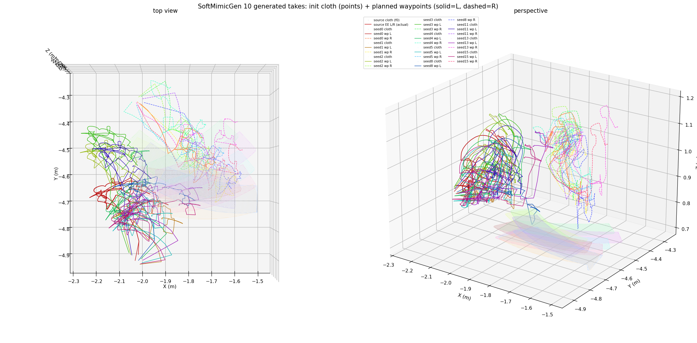

双引擎布料仿真 — 柔性面料与机械臂耦合
"从真实世界到仿真世界，再从仿真世界回到真实世界——构建面向具身智能时代的数据飞轮基础设施。"
主导建设柔性物体操作数据飞轮基础设施，实现真实采集、仿真重建、合成数据生成、VLA 评估与训练全链路闭环。为具身柔性操作 VLA 等算法迭代与真机部署提供高保真、可交互、标准化仿真系统底座。
与刚体操作不同，柔性物体（布料、衣物）具有无限自由度、自遮挡和非线性形变特性。传统仿真框架在"高保真渲染"与"高精度布料物理"之间难以兼得——基于刚体假设的物理引擎无法模拟布料的弯曲、拉伸与褶皱；而专用布料求解器往往缺乏生产级渲染和机器人接口。本项目旨在填补这一空白。
构建"实景采集 → 仿真重建 → 遥操作录制 → 合成数据增广 → VLA 后训练与推理"完整闭环。
Piper 真机 + ROS2 + Orbbec 深度相机，多视角记录布料操作轨迹与点云数据。
3DGS 高斯点云训练 → IsaacSim 导入渲染 + 碰撞体，构建高保真数字孪生场景。
"先演后采"两阶段管线——实时录制 + 确定性回放多路相机数据。
SoftMimicGen 自动增广 + LingBot-VLA 后训练及分层推理闭环。
联调 IsaacSim + Newton 仿真引擎，攻克 IsaacSim 渲染 Newton 解算柔性面料动态仿真及与机械臂刚体物理耦合的难点。
在双引擎协同架构下，Newton 的物理解算通过 NVIDIA Warp 交由 GPU CUDA 完成，同时利用 Graph Capture 机制积极维护布料粒子的计算图与 IsaacSim 渲染管线，将 GPU 资源竞争降至最低。实测双引擎仿真帧率与纯 Newton 引擎基本持平——消费级 RTX 4060Ti 环境下稳定达到 ~35 FPS，RTX 5090 环境下可达 ~50 FPS。其中 CUDA Graph Capture 是性能突破的关键——通过将布料仿真计算图一次性捕获并复用，消除了逐帧 GPU 内核启动开销，使布料解算从 7 FPS 跃升至 34 FPS（约 5× 加速）。
此外，Newton 中刚体与柔性体的抓取物理耦合过程存在接触隧穿（Contact Tunneling）现象，导致抓取不稳定。为此，我们设计了 KinematicPinningSystem：将指定粒子运动学约束至目标位置，彻底消除隧穿问题。并且 KinematicPinningSystem 是全 GPU 实现、零 CPU 回读、CUDA Graph 安全。我们根本性地解决了抓取物理耦合的"接触隧穿"问题，这对遥操作的"跟手"体验尤为关键，并且保障了仿真帧率与仿真及遥操作实时性要求。
真机遥操作采集
协调对接第三方 3DGS 软硬件资源，针对实验室室内环境完成点云采集与 3DGS 重建，同步导出高斯 PLY（视觉渲染）与碰撞体 PLY（物理碰撞）。
主导导入管线：高斯 PLY 无损转为 USD 实现原生高斯渲染，碰撞体 PLY 挂载 PhysicsCollisionAPI 赋予物理碰撞能力——两者坐标系与缩放精确匹配，在 IsaacSim 中构建视觉与物理天然同构的高保真数字孪生场景。
3DGS 室内场景重建
融合智元开源 Genie Sim 仿真框架，利用 LLM 和 MCP 驱动柔性物体、本体、背景等资产构建仿真场景、指令及评估标准，实现仿真场景的智能化自动构建。例如：输入"抓取红布对折"→ Genie Sim 自动生成布料资产、机械臂路径与覆盖率评测标准，无需手工编排。
① 布料任务：参考 SoftGym 设计 5 个典型布料操作任务。
② 评测基准：新增 4 个 Benchmark YAML 与 Eval Task JSON。
③ 操作原语：覆盖 9 种操作原语（抓取 · 展开 · 对折 · 抖平 · 挂衣架 · 收纳 · 展平 · 被动释放 · 等待）。
④ 评测谓词：定义 7 个 ADER Cloth 评测谓词（覆盖率 · 折叠检测 · 沉降 · 抬起 · 挂置 · 装箱 · 粒子距离）。
⑤ 环境适配：构建 3 种 Env——GarmentReplayEnv（轨迹回放）、GarmentDemoEnv（脚本演示）、GarmentPiEnv（VLA 推理），完整覆盖回放验证、脚本编排与算法推理场景。
设计"先演后采"两阶段 Teleop 数据采集管线：将人在环实时演示与重渲染数据生产从同一 GPU 时间轴上解耦——先轻量录制操作轨迹，再离线确定性回放补采相机与语义数据。
架构解决了两个核心问题：
"先演后录"两阶段采集管线
遥操作演示全过程回放
融合 NVIDIA SoftMimicGen 数据增广框架：以 1-3 条人类遥操作演示为种子，通过非刚性配准自动合成百级多样化操作轨迹，大幅降低真实遥操作数据采集成本。
布料泛化能力：当布料的位置、朝向、形状（适度形变）或尺寸（适度缩放）发生变化时，SoftMimicGen 通过 TPS（Thin Plate Spline，薄板样条非刚性配准）计算源布料与新布料之间的形变映射，将人类演示的末端轨迹自适应变换到新场景——夹爪动作直接重放，末端位姿经形变场调整后由 IK 求解执行。生成的合成轨迹与人类遥操作轨迹完全同构（相同的关节维度、粒子状态、帧率与数据格式），下游训练无需任何适配。支持单臂、双臂等多种本体构型。
标注融合：将夹爪末端位姿与柔性体粒子状态等关键信息接入 GenieSim 既有语义标注链路——子任务边界（reach/grasp/transport/hold/release）由录制阶段的自动分段与操作员手动标记共同派生，合成轨迹自动继承源示教的完整语义标注，回流至同一导出管线。

SoftMimicGen 双臂合成轨迹 · 10 条生成轨迹的 waypoint 规划可视化
基于蚂蚁灵波开源的 LingBot-VLA 2.0 视觉-语言-动作大模型，构建双臂布料操作的后训练与推理闭环：用一条遥操作轨迹完成模型微调，使模型学会理解"抓取布料""对折""放下"等子任务指令，并在仿真环境中按指令逐步完成完整的折衣服流程。整体工程化封装为 Docker 镜像，支持分布式训练与规模化并行评估。
VLA 初步训练效果演示
扩展 Newton VBD 求解器参数空间，支持棉、丝、涤纶等不同材质面料的差异化物理特性（弯曲刚度、拉伸刚度、摩擦系数）。
将仿真训练的 VLA 策略直接部署到 Piper 真机，量化 sim-to-real gap，建立从仿真到真机的迁移方法论。
在仿真中自动生成 10K+ 操作轨迹，训练端到端布料操作策略，并通过真机反馈持续迭代优化仿真保真度。
"从真实世界到仿真世界，再从仿真世界回到真实世界。"
柔性物体操作的数据飞轮闭环已初步建立：双引擎仿真引擎提供物理底座，3DGS 数字孪生弥合虚实鸿沟，"先演后采"遥操作管线保障数据质量，SoftMimicGen 让一条人类演示自举出百级训练数据，LingBot-VLA 完成从数据到策略的闭环验证。
当前处于从演示验证走向规模化验证的过渡阶段——下一步是规模化数据生成与 sim-to-real 真机部署，让数据飞轮真正转动起来。
仿真引擎、视觉重建、数据生成与工程化部署的核心技术组件。
核心物理仿真引擎，内置 VBD 柔性布料求解器，模拟布料弯曲、拉伸及褶皱特性。
NVIDIA 机器人仿真平台，提供高保真渲染、物理模拟与域随机化能力。
3D Gaussian Splatting 场景重建，从真实 RGB-D 数据生成高质量高斯点云。
机器人操作系统，实现机械臂控制、数据采集与设备间通信。
智元开源仿真框架，LLM + MCP 驱动场景资产自动构建与任务生成。
NVIDIA 数据增广框架，TPS 非刚性配准从少量遥操作演示自动合成百级轨迹。
松灵双臂机械臂，用于遥操作数据采集与真机部署验证。
蚂蚁灵波开源视觉-语言-动作大模型，支持 subtask 级指令驱动的双臂操作。
容器化工程部署，支持分布式训练、规模化并行评估与一键复现。